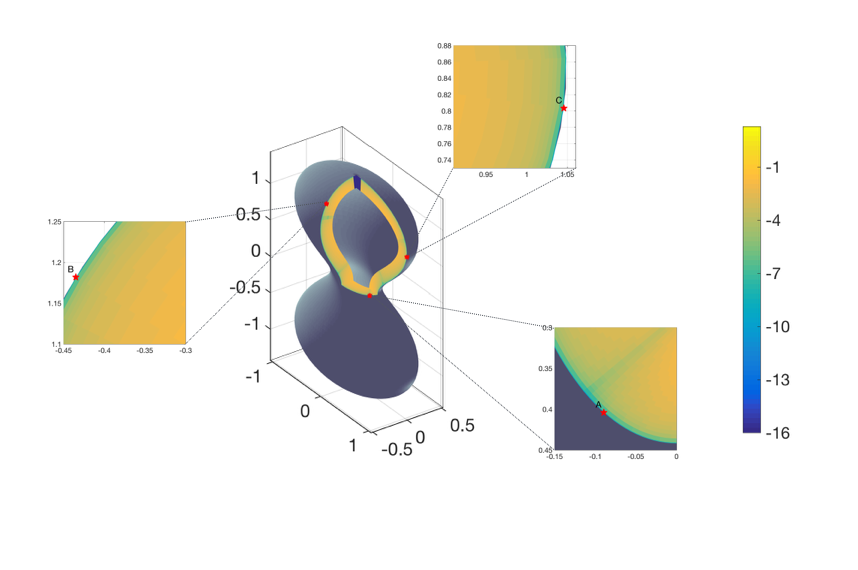

Camille Carvalho
Close evaluation of layer potentials
Sponsored by NSF DMS-1819052.Framework
The close-evaluation problem in boundary integral methods refers to large errors incurred when evaluating layer potentials at points near the boundary of the domain despite being accurate elsewhere in the domain. When using a high order Nyström method to numerically evaluate a layer potential, its high order accuracy will be effective for nearly all points in the domain. However, at close-evaluation points, this quadrature rule will produce an O(1) error. The goal is to address this error using asymptotic analysis of the nearly singular behavior.
Asymptotic method with deferred correction
We developed a numerical method based on asymptotic approximations of the kernel via rational trigonometric functions to capture the peaked behavior for close-evaluation points. Subtracting this approximation allows to use standard Nystrom method, and the remainder can be computed analytically using Fourier convolution sum.
Close evaluation for acoustic scattering. Left: standard Nyström method (O(1) close to the boundary). Right: asymptotic method with deferred correction.
Asymptotic approximations methods
We developed asymptotic approximations methods based matched asymptotic expansions of layer potentials in 2D and 3D to control the error with respect to the distance from the boundary.

Close evaluation for the double-layer potential for Laplace's equation in 3D.
Close evaluation for the double-layer potential for Laplace's equation in 3D.
References
Codes available on GitHub.
, , , SIAM Journal for Scientific Computing, 42, pp A504-A533, 2020.
, , , Journal of Computational Physics, 655, pp 327-341, 2018.